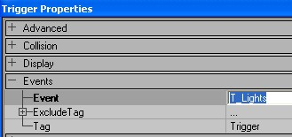
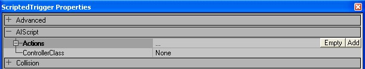
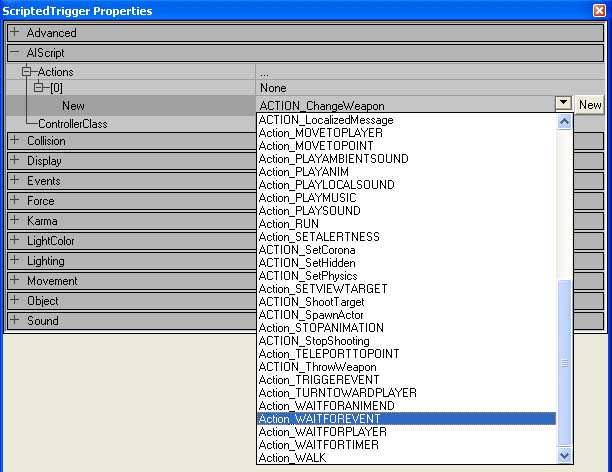
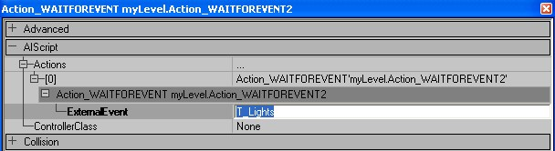
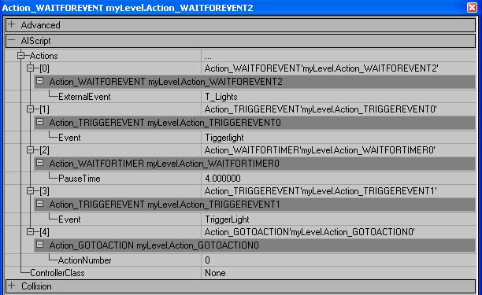
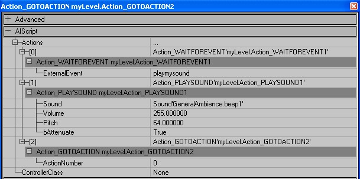

ScriptedTrigger
The ScriptedTrigger class replaces the old UT Counter, Dispatcher and SpecialEvent Trigger classes.
Properties
This property is hidden.
- ScriptedTriggerController? TriggerController
- The Controller for this ScriptedTrigger.
Overview
If you messed around with UT2003 very much you will notice that there is no Dispatcher or SpecialEvent Trigger anymore. The new ScriptedTrigger takes the place of these old actors and is much more powerful providing you with a wide range of abilities. A scriptedTrigger basically sets in motion a sequence of events when it is triggered so it works like the old dispatcher. Events that you can call are playingsounds, damagingplayers, broadcastingmessages, etc. The two main scripts I will illustrate will be for the creation of a "Dispatcher" to toggle a TriggerLight on and then off. Next I will create a "SpecialEventTrigger" to play a sound. Both use the ScriptedTrigger but are configured a little different. From these two examples you should be able to experiment and try out some other things. Read through making a Dispatcher first as the basics are explained there. A ScriptedTriggers are dispatchers anyway.
Making a Dispatcher
First of all you will need to add two things to the map, a regular Trigger and a ScriptedTrigger. As far as I know the ScriptedTrigger cannot trigger itself so you will always need something else to trigger it. This can be any event in the game, like the picking up of a Flag, a triggered event, etc. In this case a normal Trigger will be fine. Once you place your Trigger you will need to come up with the name of the event. In this case it is to turn on and off a TriggerLight so I have named my event T_Lights You will need to place the name in the Trigger's event line:

|
Next you will need to go to the properties of the ScriptedTrigger and expand AIScript.

|
This is where you will start adding your events or "actions" as they are called. I'm not sure how many you can have but you shouldn't need a whole lot. Basically what you will be doing here is creating a script sequence, a series of actions that tell the game what to do. Over on the right you will see the ADD button. You need to click on this to start adding actions. Go ahead and click this once to create the first action place holder. Once you do you will have an action listed underneath with a NEW. If the action you want to use is already listed then you would click this button to create the action to be modified. Otherwise you will need to use the drop down box available underneath. This is where you will see the choices for the different actions you can perform. Since this ScriptedSequence will be triggered, the first action you need to add is Action_WaitforEvent This tells the script to wait for a particular event to be called before executing.

|
Once you have it selected you need to click on NEWOnce you do this the action will be configured for the first sequence. You will now need to customize it. This action is pretty easy as it only has 1 setting, which is ExternalEvent. This is where you tell it what event will cause the script to run. In this case it will be the event that is initiated by the trigger we added. So you will need to type in T_Lights.

|
Now you will need to create more actions to make this "dispatcher" do what you want it to do. Here are the remaining actions that will be needed to triggertoggle a triggerlight?:
- ACTION_TriggerEvent
- This is the same type of action that a normal trigger does. It can be used to trigger another script or whatever. In this case it is used to trigger the lights. Since the lights are set to Trigger Toggle, this will turn them ON
- ACTION_WaitforTimer
- This is a pause in the script, enter a number in seconds to tell it to pause before going to the next action.
- ACTION_TriggerEvent
- This is the second triggerevent to turn the lights off. This takes place 4 seconds after the last TriggerEvent because of the added pause.
- ACTION_GotoAction
- This is tells the script to jump to a specific action in the script. Since in this case it is "0" it will make the script reset and go back to the beginning to ACTION_WaitforEvent. If you only want your script to run once and never run again then you can leave this out. Also if that is the case then it would probably be best to add an ACTION_DestroyActor at the end and enter in the object name of this ScriptedTrigger. That will destroy it and free up some resources.

|
SpecialEvent
Since you already know how to add actions there is no need to go over that again. So I will show you a screen shot of what a script would look like to play a sound effect when triggered.
- ACTION_Playsound
- Plays a sound effect that you choose in the sounds browser. bAttenuate tells it whether or not to attenuate (lower) the volume as you move away from the source. If this is false then the volume of the sound will remain the same within the defined radius

|
Some other familiar actions that you may know from the old UT are:
- ACTION_DamageInstigator
- Causes damage to who ever caused this script to run.
- ACTION_DisplayMessage
- Displays a message on the screen. Good for testing your scripts to see if they are running.
Organizing Actions
As you click around in the actions lists you will see some more buttons:
![[scriptedtrigger8]](images/scriptedtrigger8.jpeg) |
- EMPTY
- Deletes all actions in the list. Be careful not to accidentally hit this if you don't want to delete everything
- CLEAR
- Clears out the current Action for the line of script you clicked on. The line of script will still be there. Good for if you want to replace an action with a different action that you want to occur at the same spot
- DELETE
- Deletes the script line and the action it contains. The actions below it will move up to fill its place.
- INSERT
- Inserts a line of script on whatever line you click insert on. the ADD button always just adds a new line to the end of the script where as INSERT can add a line anywhere.
Complete list of actions as well as some other info can be found on [UDN], follow links below.
External Links

Tutorials
- Killing without Gibbing - How to kill pawns without gibbing them and by making use of a scriptedtrigger.
- Usable Teleporter - How to make you teleport by using your [Use] button.
Related Topics
Discussion
SlickWilly: (tutorial author) [SlickWilly] Email me if you would like me to add any other configurations you would like explained. (slickwilly@planetunreal.com)
SuperApe: This page is meant to be a class page, but it contains a tutorial on making a Dispatcher. Should this be split into it's own page?
Angel_Mapper There's a bit of misinformation in the paragraph after "Making a Dispatcher" (Besides that they're no longer called Dispatchers  ). ScriptedTriggers will automatically start executing their first action when the game starts, so they don't necessarily need an external trigger unless they're using an ACTION_WaitForEvent.
). ScriptedTriggers will automatically start executing their first action when the game starts, so they don't necessarily need an external trigger unless they're using an ACTION_WaitForEvent.
SuperApe: Yeah, this page could use some updating, etc. It's possible the tutorial writer was saying that instead of thinking of a ScriptedTrigger as a Trigger, which can "trigger itself" (poor description) when touched, etc., think of it as a array of commands which could be preceeded by an external Trigger and the ACTION_WaitForEvent, if you'd want it to work something like a Trigger. I'm guessing this because it's a common misnomer to think of it as a Trigger and they do start their script with an ACTION_WaitForEvent in the tutorial.
Category To Do – Split off "Making a Dispatcher" to it's own page. Link to it from here.